Início
O V5 acerta na primeira impressão: palco azul, título grande e um ponto de ação claro. Os quatro benefícios no rodapé voltam a encher a tela de texto e “3 rodadas” não deve ser fixo se a sala permite outra configuração.
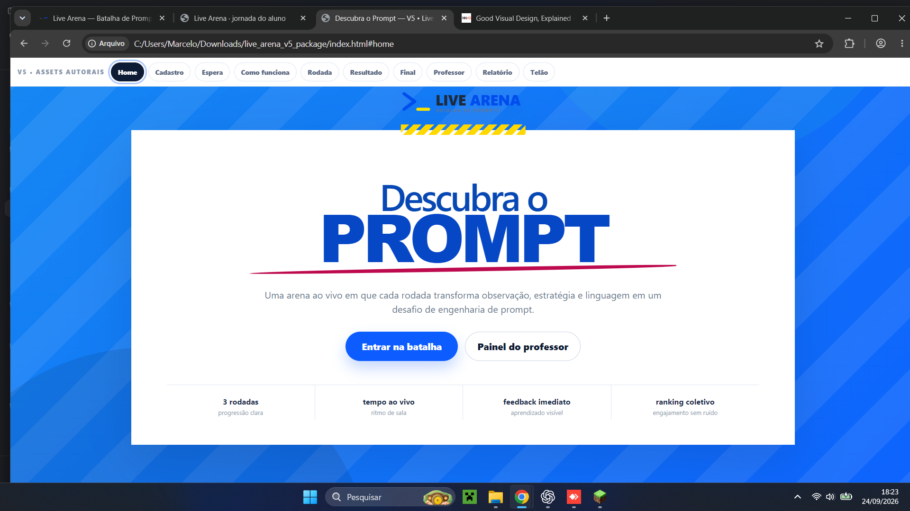
Entrada na sala
A composição em duas metades do V5 é melhor trabalhada e parece um produto próprio. O formulário atual é o correto para o aluno: código e nome. E-mail, cargo, instituição, aceite e uma etapa extra criariam atrito sem corresponder ao fluxo existente.
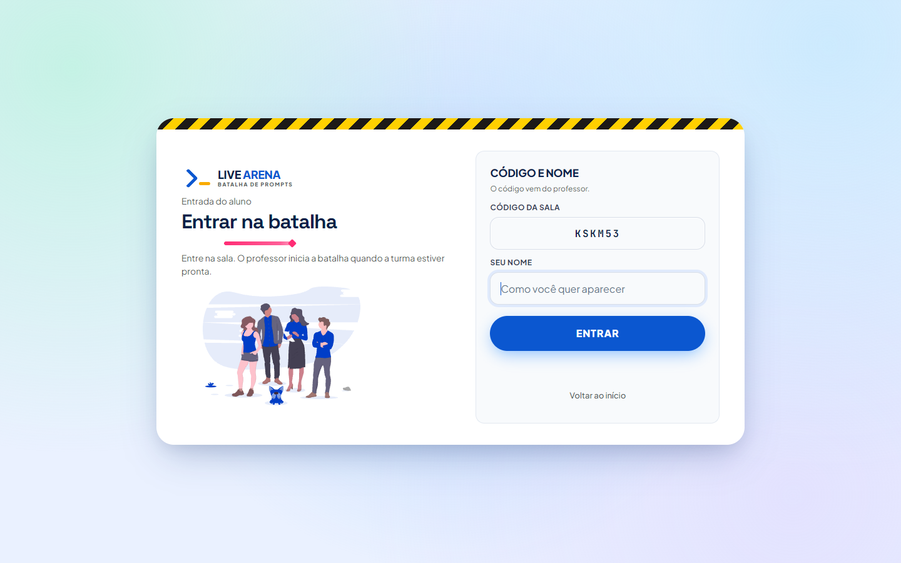
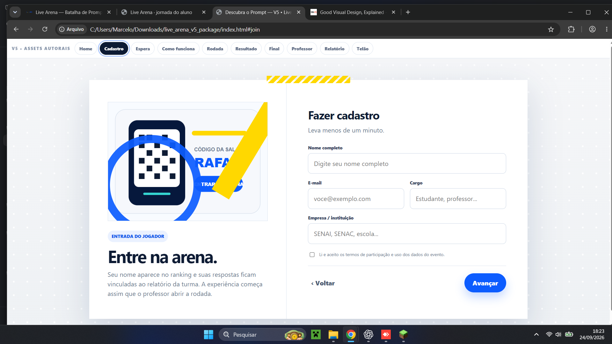
Sala de espera
“Você já está dentro” é uma confirmação melhor que um aviso genérico de espera. A arte autoral do V5 reforça a marca; a ilustração do projeto atual parece genérica. No V5, porém, o QR cobre parte do código na captura e “Simular início da aula” é controle de protótipo, inadequado para o aluno.
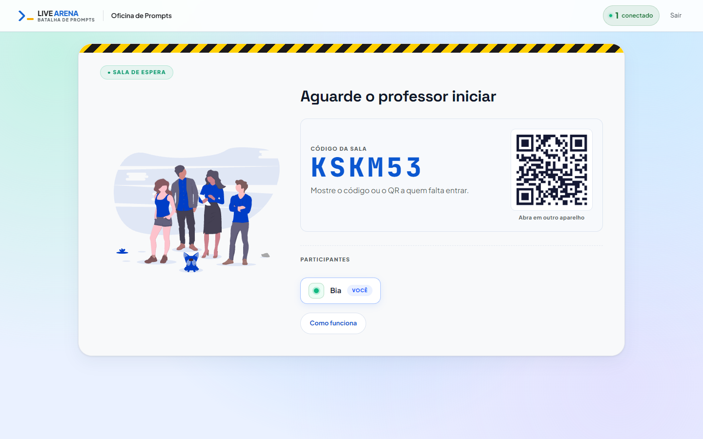
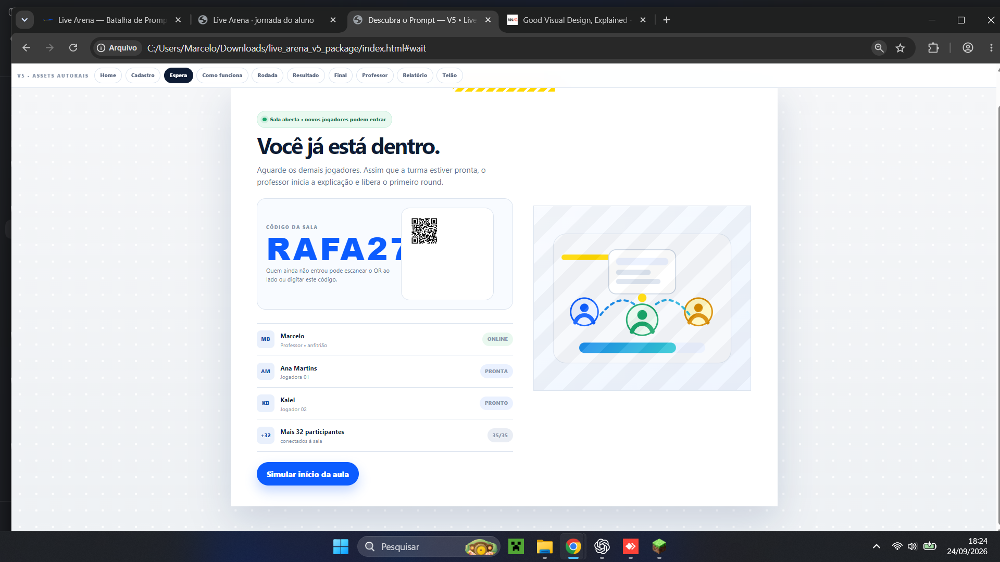
Como funciona
O diagrama visual do V5 explica melhor a dinâmica de observar, escrever e evoluir. Ele repete a explicação em texto, três cartões e uma faixa final. O projeto atual é mais enxuto. A síntese ideal é um único diagrama curto com detalhes opcionais; iniciar a rodada continua sendo tarefa do professor.
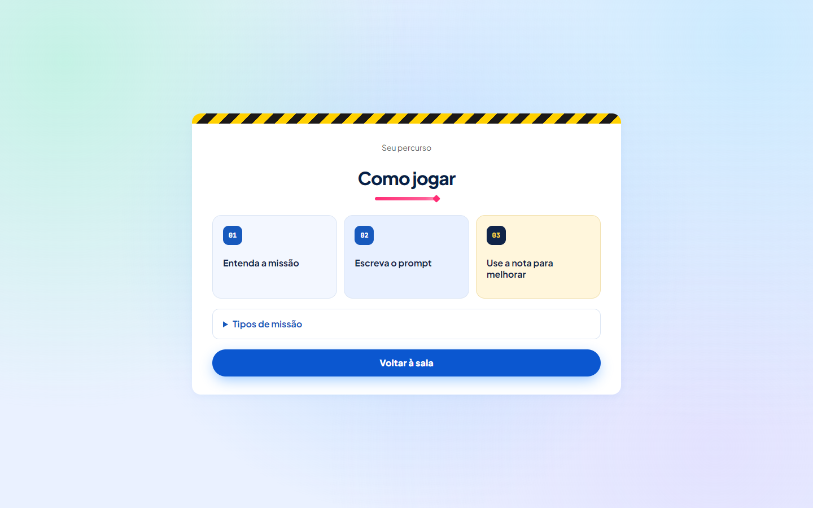
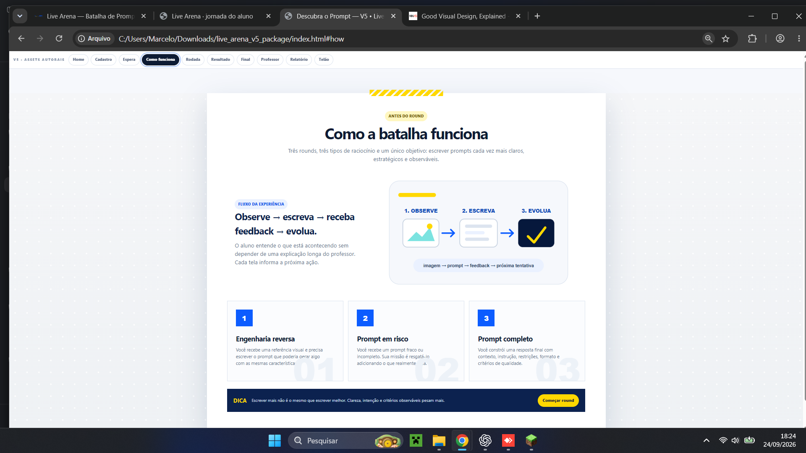
Missão e escrita
Esta é a maior oportunidade visual: o V5 dá protagonismo à referência e deixa a escrita parecer o centro da ação. Isso deve valer quando a missão realmente tiver imagem; outras missões precisam de composição própria. Ranking e conquista abaixo da escrita só devem aparecer se os dados e regras reais justificarem. O print V5 foi feito com o navegador em 80% de zoom, então sua aparente compactação não prova que caiba a 100% ou no celular.
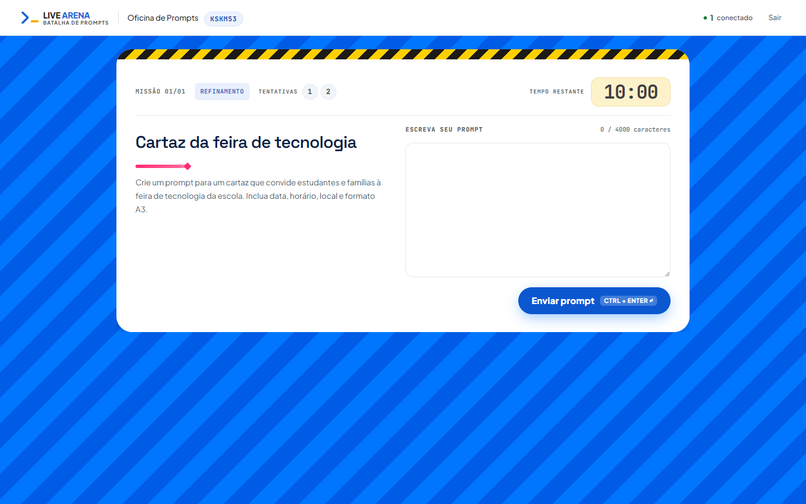
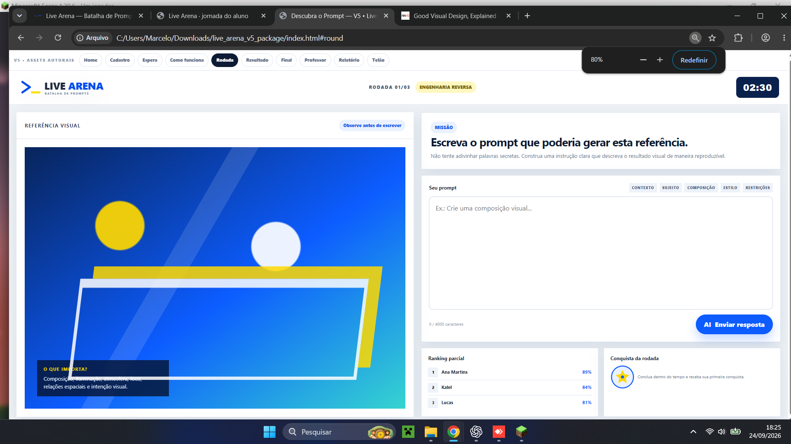
Prioridade de uso: enunciado, referência, campo de prompt, tempo e confirmação de envio visíveis sem distrações. Informações secundárias podem ficar depois.
Resultado da rodada
O V5 cria um momento de recompensa mais forte com a nota grande e os critérios organizados. O projeto atual explica a nota com menos texto e já indica o que melhorar. “Preparar próximo round” e “Ver encerramento” no V5 parecem comandos do aluno, mas essas transições dependem da condução da sala; não devem ser importados como botões funcionais.
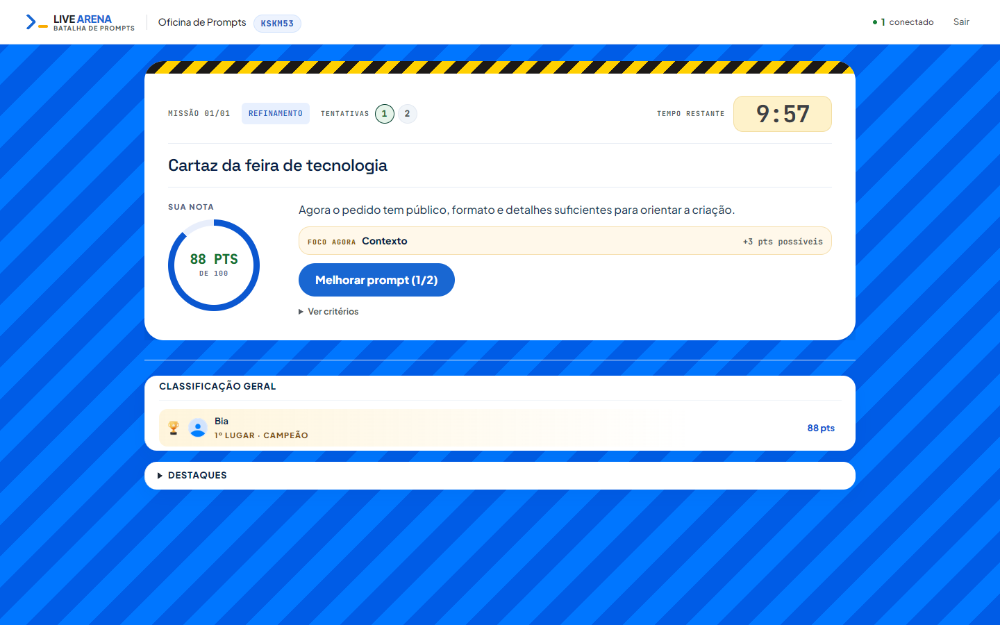
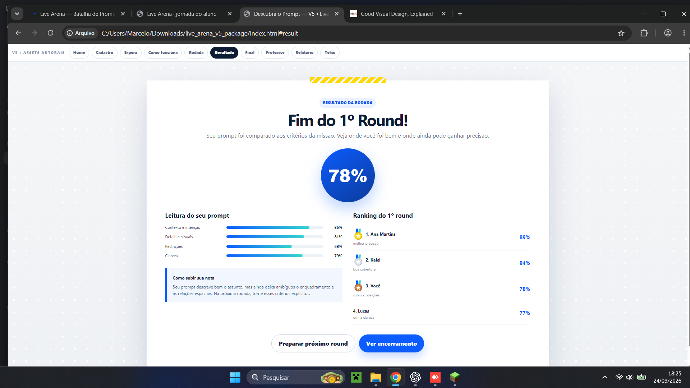